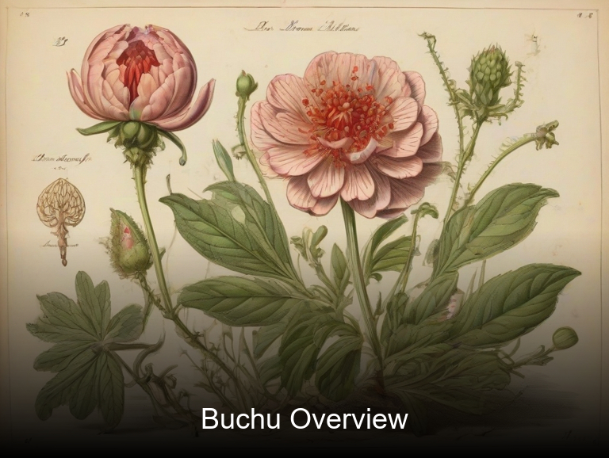
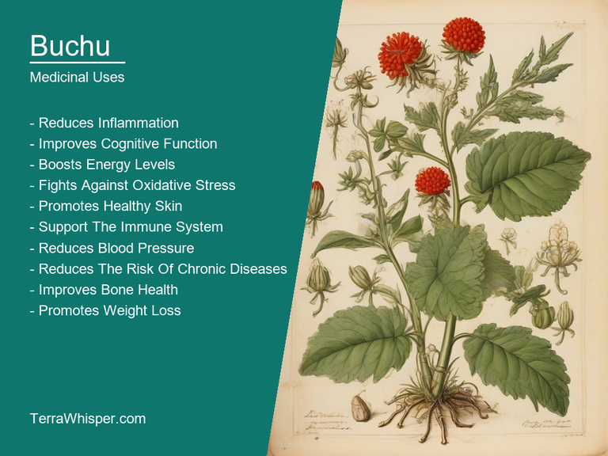
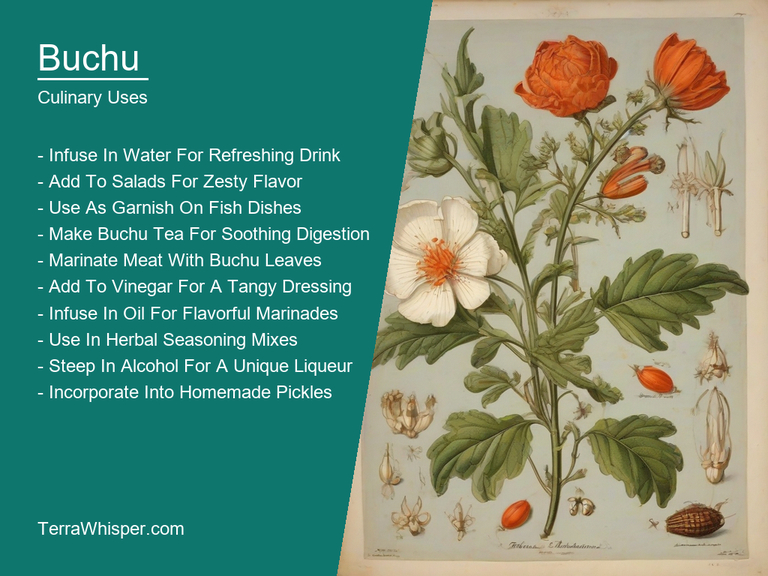
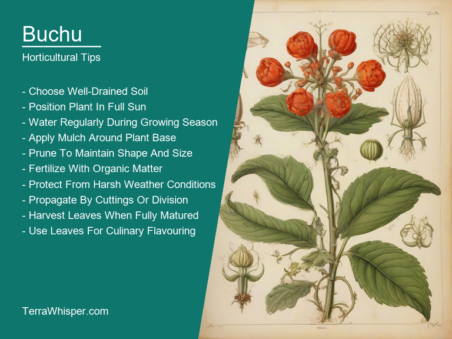
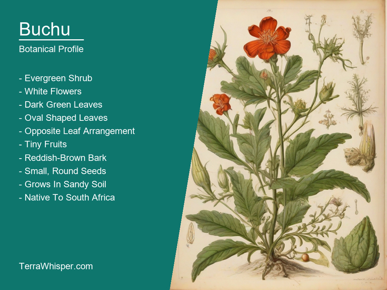
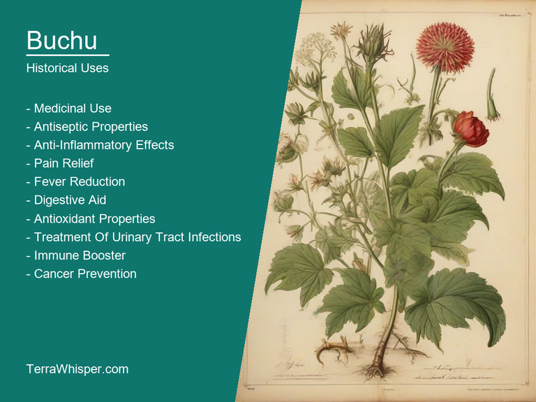

Buchu, scientifically know as Barosma betulina, is a medicinal and culinary plant that has been used for centuries by the indigenous people of South Africa. The leaves and stems of the buchu plant are high in antioxidants and have anti-inflammatory properties. They are also believed to help regulate blood sugar levels and improve digestion. In traditional African medicine, buchu is used to treat a variety of conditions, including headaches, fevers, and respiratory problems. It is also commonly used as a natural remedy for kidney stones and urinary tract infections.
Buchu is a popular ornamental plant that is often grown in gardens and landscapes due to its attractive foliage and fragrant flowers. The leaves of the buchu plant are a bright green color and have a slightly fuzzy texture. They can grow up to six feet tall and are arranged in clusters at the end of stems. The small, tubular flowers of the buchu plant are pinkish-red in color and bloom in clusters throughout the year. These flowers attract pollinators
In this article, you will discover what are the medicinal and culinary uses of buchu. Then, you'll learn how to cultivate it, what is its botanical profile, and how it was used historically.
Buchu (Barosma betulina), native to South Africa, is a medicinal plant known for its wide range of health benefits. This versatile herb helps in treating various health conditions including kidney stones, urinary tract infections, and digestive disorders. Its natural diuretic properties help in increasing the flow of urine, which in turn prevents formation of kidney stones and reduces inflammation associated with UTIs. Buchu also has anti-inflammatory properties that aid in relieving pain and swelling caused by arthritis or other inflammatory conditions.
The following illustration lists the most important uses of buchu in medicine.

The medicinal constituents found in Buchu include flavonoids, tannins, volatile oils, and alkaloids. These compounds give Buchu its antibacterial, anti-inflammatory, and antioxidant properties that contribute to its various health benefits.
The most commonly used parts of the Buchu plant for medicinal purposes are its leaves and fruit. They can be consumed in various forms such as infusions or decoctions, or used in combination with other herbs to create more potent remedies. Traditionally, the leaves have been used to treat kidney stones, while the fruit is used to alleviate digestive problems and reduce inflammation.
While Buchu has numerous health benefits, it's essential to be aware of potential side effects. Some people may experience allergic reactions or skin irritation after applying topical preparations containing Buchu. Pregnant women should also avoid using this herb due to its potential to induce contractions and stimulate menstrual flow.
To ensure safe use of Buchu, it's crucial to follow proper precautions. It is always recommended to consult with a healthcare professional before starting any new treatment plan, especially if you have pre-existing medical conditions or are taking other medications. Additionally, be cautious when using Buchu products containing alcohol or other additives that could cause adverse reactions in some individuals.
As an esteemed chef, I am excited to share the culinary uses of Buchu (Barosma betulina). This aromatic plant has long been used in traditional medicine and food preservation. In the culinary world, Buchu is known for its unique flavor and ability to add a distinct touch to dishes.
The following illustration lists the most common uses of buchu for culinary purposes.

The flavor profile of Buchu can be described as an intoxicating blend of minty freshness and citrus notes, making it a versatile ingredient in various cuisines. Its aromatic qualities make it ideal for use in teas, infusions, and even cocktails.
The edible parts of Buchu primarily consist of the leaves and fruits. The leaves are commonly used as a seasoning, while the fruits can be eaten fresh or dried and ground into a powder. Both parts add flavorful complexity to dishes and drinks.
As an expert chef, I recommend using Buchu sparingly due to its potent flavors. Start by adding small amounts of crushed leaves or a sprinkle of the powdered fruit to salads, dressings, sauces, or marinades. Experiment with Buchu as an added kick to your favorite seafood dishes or in homemade cordials for a unique twist on traditional beverages.
While Buchu is generally considered safe for consumption, it's essential to note that excessive intake may cause side effects such as nausea and dizziness. It is also crucial to consult with a healthcare professional before using Buchu if you have any underlying health conditions or are pregnant or breastfeeding. As always, moderation is key when incorporating this versatile ingredient into your culinary creations.
Buchu (Barosma betulina) is a perennial herb that can be grown from seed or cuttings. Propagation from seeds is recommended for growing larger numbers of plants; sow them in pots during late winter and transplant the young seedlings into the garden when they are about 8 cm tall. Alternatively, take semi-hardwood cuttings in summer or semi-ripe ones in early autumn.
The following illustration lists the most important tips to cutlitvate buchu.

The ideal conditions for Buchu growth include well-drained, acidic soil with a pH of 4 to 6.5. The plant thrives in full sun but can tolerate partial shade. It's a drought-resistant plant once established, but it benefits from supplementary watering during extended dry spells. Buchu is hardy down to -1°C (30°F) and can be grown in USDA zones 9b to 11.
Maintenance for Buchu involves regular pruning to maintain its size and shape; deadhead spent flowers regularly to encourage more blooms. Mulching around the base of the plant can help conserve moisture, particularly during dry periods. Fertilize sparingly with an organic, acidic fertilizer in late winter to promote healthy growth. Regular weeding is also crucial, as competition for nutrients and water may affect Buchu's overall health.
Buchu, with botanical name Barosma betulina, belongs to the domain Eukarya, kingdom Plantae, phylum Tracheophyta, class Magnoliopsida, order Rutales, family Rutaceae, genus Barosma, and species betulina. Common names include Cape Buchu and Pepper Bush.
The following illustration display the botanical profile of buchu.

Buchu is a small, evergreen shrub that grows up to 2 meters in height. It has lance-shaped leaves with serrated margins, which are arranged alternately along the stem. The flowers are white or pale pink, and they bloom from late winter to early spring. Buchu bears small, round fruits that turn blue when ripe.
B. betulina var. marginata and B. betulina var. betulina. The primary difference between these two variants is the shape of their leaves. In var. marginata, the leaf margins are entire (smooth), while in var. betulina, they are serrated (toothed).
Buchu is native to South Africa, specifically in the Western Cape province. It grows naturally in fynbos vegetation - a unique type of shrubland found on nutrient-poor soils along the coast and mountains of the region. This habitat supports an extraordinary diversity of flora and fauna due to its distinct climatic conditions and geological history.
The life cycle of Buchu starts with germination from seeds or vegetative propagation through cuttings or layering. The plant grows slowly during its first few years but becomes more vigorous as it matures. It produces flowers in late winter, followed by fruit development if pollination is successful. After fruit formation, the seeds disperse naturally via wind or animal dispersal, allowing the species to persist and spread within its natural range.
Historically speaking, in the realm of traditional medicine, Buchu leaves were often brewed into a tea or tincture that was used to treat various ailments such as urinary tract infections, kidney stones, stomach upsets, and inflammation. The anti-inflammatory, diuretic, and antibacterial characteristics of Buchu have been well documented and provide substantial evidence for its medicinal value.
The following illustration lists the most well known historical uses of buchu.

In addition to its medicinal uses, Buchu also played a significant role in African divination practices. Its distinct aroma was believed to be capable of communicating with the spirit world, making it an integral part of many rituals and ceremonies aimed at gaining insight into future events or understanding past occurrences. Shamans and healers would use the plant's essence as a tool for guidance, much like modern-day psychics might use tarot cards or tea leaves.
Furthermore, Buchu is deeply rooted in African legends and folklore. According to several tribal stories, Buchu was gifted by the gods as a remedy against diseases and an instrument for communicating with them. It was considered sacred and often used in rituals honoring deities or appeasing spirits. In some tales, it is said that those who possessed knowledge of Buchu's powers were granted extraordinary wisdom and longevity, cementing its status as a symbol of spiritual strength within many African cultures.